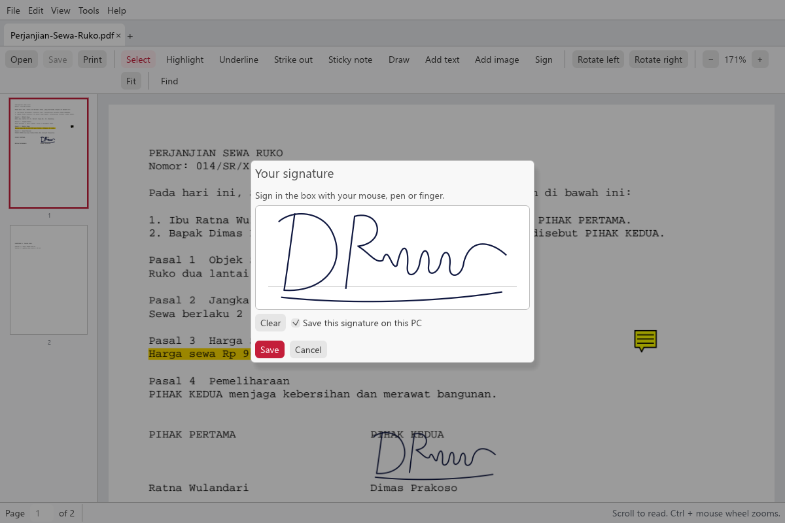
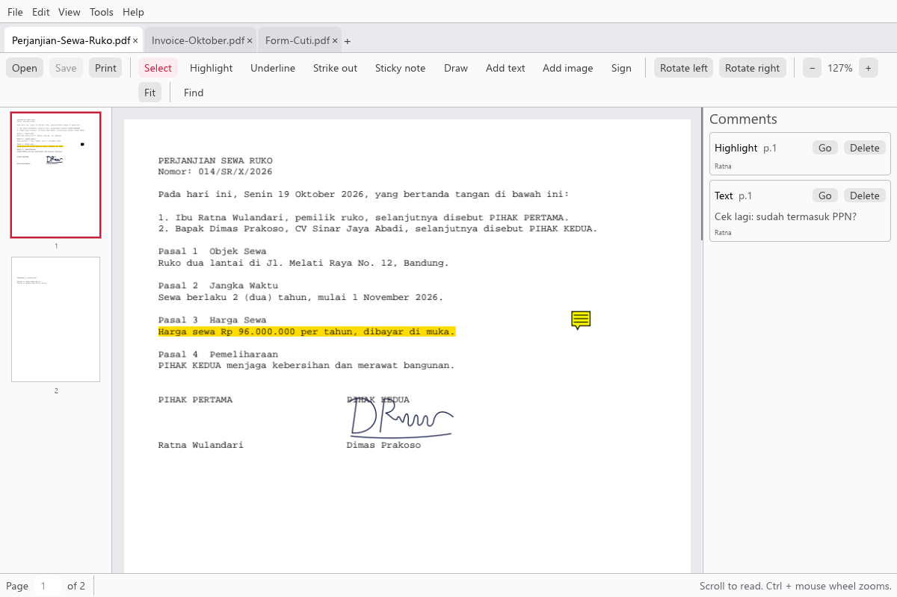
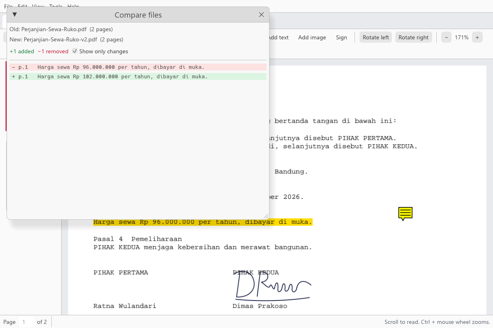
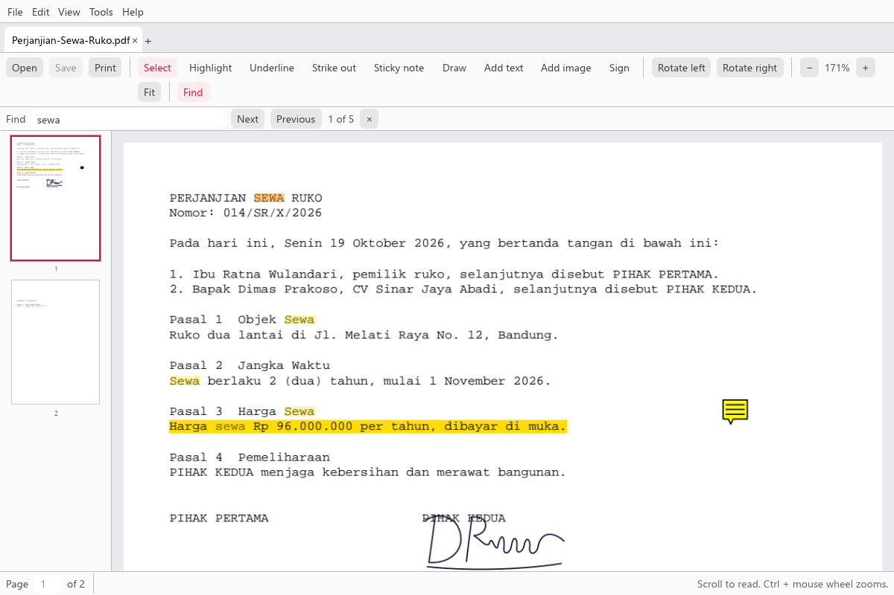
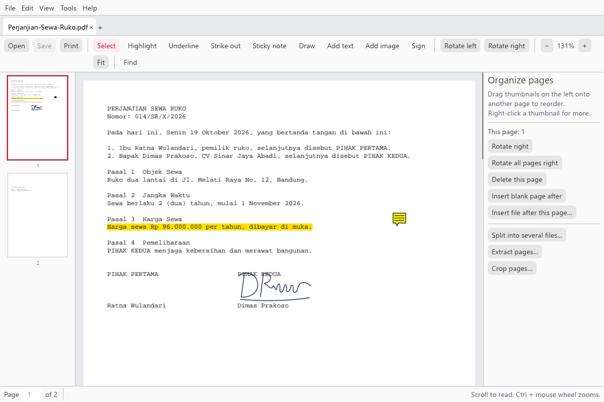
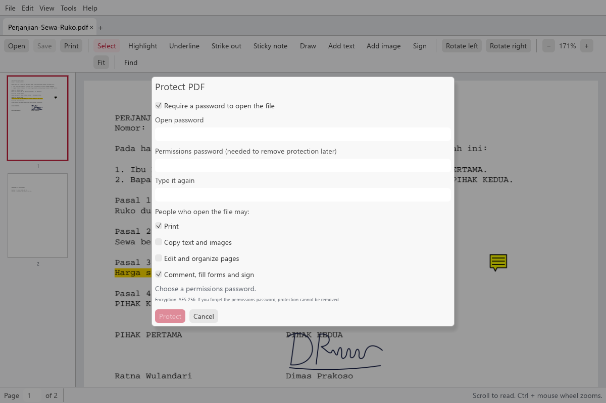

The app
Real screens, with a fictional contract.

01
Sign
Draw once, place it with a drag.

02
Comments
Highlights and notes, listed and deletable.

03
Compare
What changed between two versions.

04
Find
Every match highlighted, one by one.

05
Organize
Rotate, delete, insert, split, crop.

06
Protect
Password and permissions, AES-256.